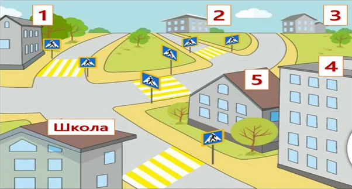

Жастардың есте сақтау қабілетін жақсартуға арналған әдістер (16-24 жас)
Жастардың есте сақтау қабілеті жоғары деңгейде дамыған. Алайда, бүгінгі заман көрінісінде түрлі гаджеттер әсерінен олардың да есте сақтау қабілеті нашарламауы үшін осы жаттығуларды қолдану маңызды!
Мысалы, егер сіз мектепке баратын болсаңыз, барып-келу жолыңызда түрлі маршруттарды қолдану арқылы мидың есте сақтау қабілетімен қатар, күрделі мәселелерді шешу дағдысын дамыта аласыз.
